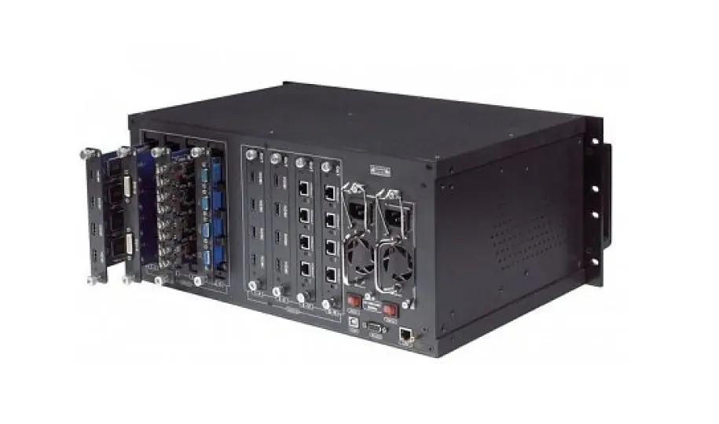

Коммутационное оборудование
Коммутаторы и матричные коммутаторы MuxLab – это универсальные устройства, осуществляющие коммутацию и преобразование мультимедиа сигналов. MuxLab предлагает модельные ряды коммутаторов как для систем небольших масштабов – переговорных комнат, так и для крупных проектов – телестудий, концертных залов и т.д. Матричные коммутаторы MuxLab имеют модульную архитектуру, что позволяет легко расширять возможности оборудования, просто добавляя необходимые платы.